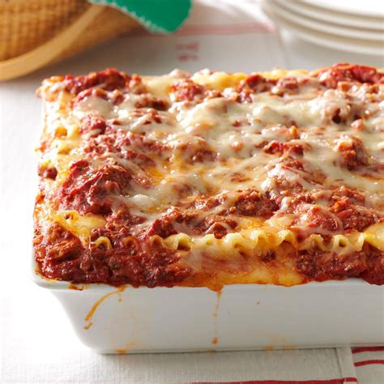

Lasagna

A classic Italian comfort food.
Wide strips of pasta, separated by layers of meat
sauce and ricotta cheese, topped with mozzerella.
Note: You will need a deep pan for this!
Ingredients:
- 1 pound sweet Italian Sausage
- 3/4 pound lean ground beef
- 1/2 cup minced onion
- 2 cloves garlic, crushed/li>
- 1 (28 oz) can crushed tomatoes
- 2 (6.5 oz) cans tomato sauce
- 2 (6 oz) cans tomato paste
- 1/2 cup water
- 2 tablespoons white sugar
- 4 tablespoons chopped parsley
- 1 1/2 teaspoons dried basil leaves
- 1 1/2 teaspoons salt (or to taste)
- 1 teaspoon Italian seasoning
- 1/2 teaspoon fennel seeds
- 1/4 teaspoon groud black pepper
- 12 lasagna noodles
- 16 oz ricotta cheese
- 1 egg
- 3/4 pound sliced mozzarella cheese
- 3/4 cup grated Parmesan cheese, grated
Let's cook! --
- Gather ingredients
-
In a pot, cook the sausage beef, onion and garlic
over medium heat till well browned.
- Stir in crushed tomatoes, tomato sauce, tomato paste,
and water. Season with sugar, 2 tablespoons parsley,
basil, 1 teaspoon salt, Italian seasoning, fennel
seeds, and pepper. Simmer, covered, for about 1 1/2
hours, stirring occasionally.